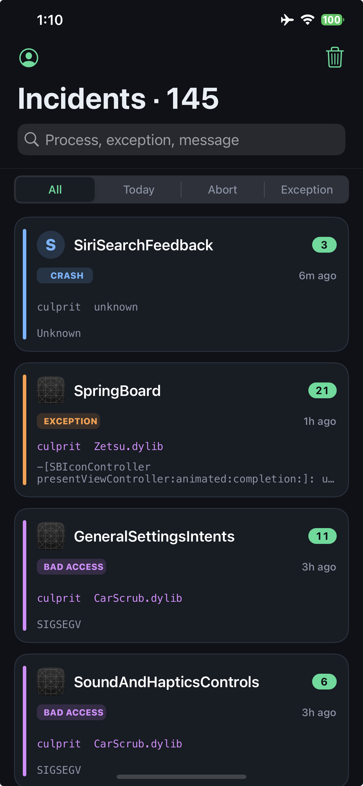

Crash reports
Culprit
CrashReporter の .ips をプロセスごとにまとめ、落ちた dylib を culprit として表示します。
Groups CrashReporter .ips files by process and shows the faulting dylib as culprit.
iOS 15+
arm64 / arm64e
rootless
App
プレビュー
Preview

できること
Features
/var/mobile/Library/Logs/CrashReporter の .ips を読み、アプリごとにまとめます。落ちたスレッドからツイーク dylib を推定し、culprit Zetsu.dylib または unknown と出します。
Reads .ips files from /var/mobile/Library/Logs/CrashReporter and groups them by process. The crashed thread is scanned for a tweak dylib and shown as culprit Zetsu.dylib or unknown.
使い方
How to use
1
Culprit を入れるInstall Culprit
パッケージマネージャからインストールします。アプリです。
Install it from your package manager. It is an app.
2
プロセスを開くOpen a process
一覧からアプリを選び、タイムラインの報告をタップします。
Pick a process, then tap a report in the timeline.
3
Engineer をコピーCopy Engineer
Engineer タブでコピーすると、GitHub / Discord 向け Markdown になります。
On the Engineer tab, Copy yields Markdown for GitHub or Discord.
よくある質問
FAQ
ログはどこから読みますか？ Where do the logs come from?
/var/mobile/Library/Logs/CrashReporter の .ips です。Tweak ではなくアプリです。
/var/mobile/Library/Logs/CrashReporter .ips files. Culprit is an app, not a tweak.
culprit が unknown です culprit shows unknown
落ちたスレッドに、基盤以外のツイーク dylib が見つからないときです。システム側のクラッシュのことがあります。
No non-infrastructure tweak dylib was found on the crashed thread. It may be a system crash.
slog との関係は？ How does this relate to slog?
色付きログの見せ方を slog（Ethan Arbuckle）のソースを参考にしました。
Colored log presentation was informed by slog by Ethan Arbuckle.
リスプリングは必要ですか？ Do I need to respring?
不要です。インストール後、ホームに Culprit が出ます。出ないときは uicache してください。
No. Culprit appears on the home screen after install. Run uicache if the icon is missing.
他のパッケージ
Other packages
対応
Compatibility